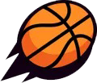
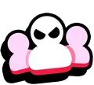
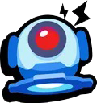

Rankings
Mejores Brawlers por mapa
Al igual que con cualquier juego con una lista variada, los Brawlers de Brawl Stars varían en efectividad. Sin embargo, a diferencia de muchos otros juegos, Brawl Stars tiene una multitud de modos de juego que permiten que muchos Brawlers brillen en algunas áreas y fracasen en otras. Hemos reunido listas de lo que consideramos que es lo mejor en cada modo de juego y las compilamos aquí. Además, hemos hecho una lista individual para cada modo de juego con explicaciones más detalladas de nuestro razonamiento.

Atrapagemas
Atraco

Balón Brawl
Basket Brawl

Caza Estelar
Destrucción

Duelos

Noqueo

Pelea Robótica
Robotización

Supervivencia (solo)

Supervivencia (dúo)

Todos contra uno